A glimpse · my own films of the Cityscape 2017 build, ADNEC Abu Dhabi
Exhibitions
Exhibitions.
Twenty-two shows built, 2010 to 2024, and more than fifty designed: stands and pavilions for government departments and companies, from ADNEC in Abu Dhabi to Dubai and Sharjah. Through AntBrush, I led their design and delivery, working with our creative team and production partners.
Four years for the same department: the pavilion in 2015, 2016 and 2017, the film in 2018. In 2017: 7,200 sq ft (672 m²), fourteen projects, built in three days.
Today part of the Department of Municipalities and Transport. Its booth at Gulf Traffic, Dubai World Trade Centre, December 2018, handed over the evening before the show.
Tawdheef 2015 · the department’s stand, 39 by 39 ft (12 by 12 m)
Cityscape Abu Dhabi 2015 · the department’s pavilion; its renders are on the Cityscape page
World Future Energy Summit 2015 · the department and its three municipalities on one stand
Cityscape Abu Dhabi 2016 · Al Qudrah Holding’s “Traditional Market” booth, produced for the developer
National Housing Exhibition 2018 · Musanada’s stand, a touch screen and two scale models; the client approved our quotation
Also built, shown elsewhere.
World Future Energy Summit 2010 and 2011 · on the summit’s page
Al Forsan International Sports Resort, about 2011 · on the Al Forsan page
Al Fahad at ISNR, the security show, 2012
ZOWD Project at the Abu Dhabi International Book Fair, 2012
Cityscape Abu Dhabi 2016 · the department’s pavilion, on the Cityscape page
All twenty-two, by year →
2010 World Future Energy Summit · Department of Municipal Affairs · built
2011 World Future Energy Summit · Department of Municipal Affairs, with the three municipalities · built
about 2011 a show at ADNEC · Al Forsan International Sports Resort · built
2012 World Future Energy Summit · ADNOC · built, designed for the builder Marcoms
2012 ISNR, the security show · Al Fahad · built
2012 Abu Dhabi International Book Fair · ZOWD Project · built through the builder Marcoms
2012 Abu Dhabi International Sports Exhibition · Abu Dhabi Sports Channel · built
2012 Arabian Travel Market, Dubai · Nas Air, today flynas · built
2013 NAVDEX · NAS, Naval Advanced Solutions · built
2013 World Future Energy Summit · the department and its three municipalities; Abu Dhabi Chamber · built; won by public tender
2015 Tawdheef · the department and Abu Dhabi City Municipality · delivered, not photographed
2015 Cityscape Abu Dhabi · the department and its three municipalities · delivered, not photographed
2015 World Future Energy Summit · the department and its three municipalities · delivered, not photographed
2016 Cityscape Abu Dhabi · the department and its three municipalities · built; by direct order
2016 Cityscape Abu Dhabi · Al Qudrah Holding: the “Traditional Market” booth · produced, not photographed
2017 Tawdheef · Department of Municipal Affairs and Transport · built; by direct order
2017 Cityscape Abu Dhabi · the department and its three municipalities · built; by direct order
2018 National Bullying Prevention Week · Ministry of Education · built
2018 National Housing Exhibition · Musanada: the stand, a touch screen and two scale models · delivered, not photographed; an approved quotation
2018 Gulf Traffic, Dubai · Department of Transport, Abu Dhabi · built
2018 FDI Forum, Sharjah · Shurooq · built; by letter of award
2024 Innovation Month, Al Ain · Al Ain City Municipality · built; won by competitive quotation
On paper
More than fifty, designed.
Designed for the builder, not built by us: most of them in 2011 to 2013, for the Dubai stand builder Marcoms. Each one shown here is a render, and says so.
Cityscape 2017. The Department of Municipal Affairs and Transport sent its plan: two conference rooms, a store, the souq and fourteen projects on one platform, 75 by 92 ft (23 by 28 m).
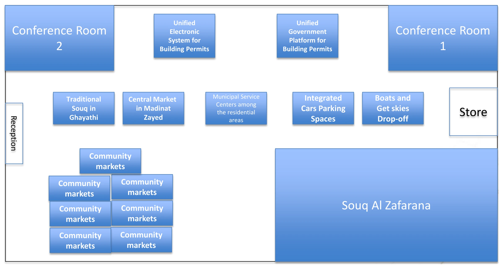
The client’s block plan, from its brief of 20 March 2017.
2 · The idea
Then one line.
One diagonal across the grid. The red carpet carries the visitor past the projects to the souq, the main one, at its end; the rooms sit where the line leaves space.
The design plan, from above · 28 March 2017.
3 · The route
Where people will walk.
Cityscape 2015. The hall plan with the visitors’ way in drawn on it: an arrow at every entrance, and the stand in its place among the others.
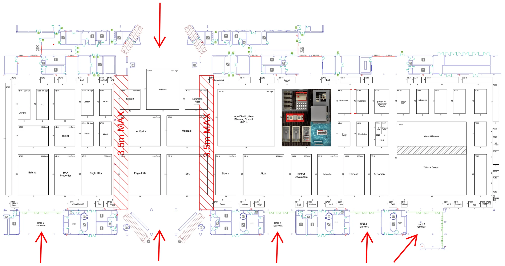
The hall plan, Cityscape Abu Dhabi, April 2015.
4 · The zones
Entry to exit, in zones.
World Future Energy Summit 2013. A 65 by 85 ft stand (20 by 26 m) planned as a walk: in through sun, power and water, across the core in the centre, out through the future.
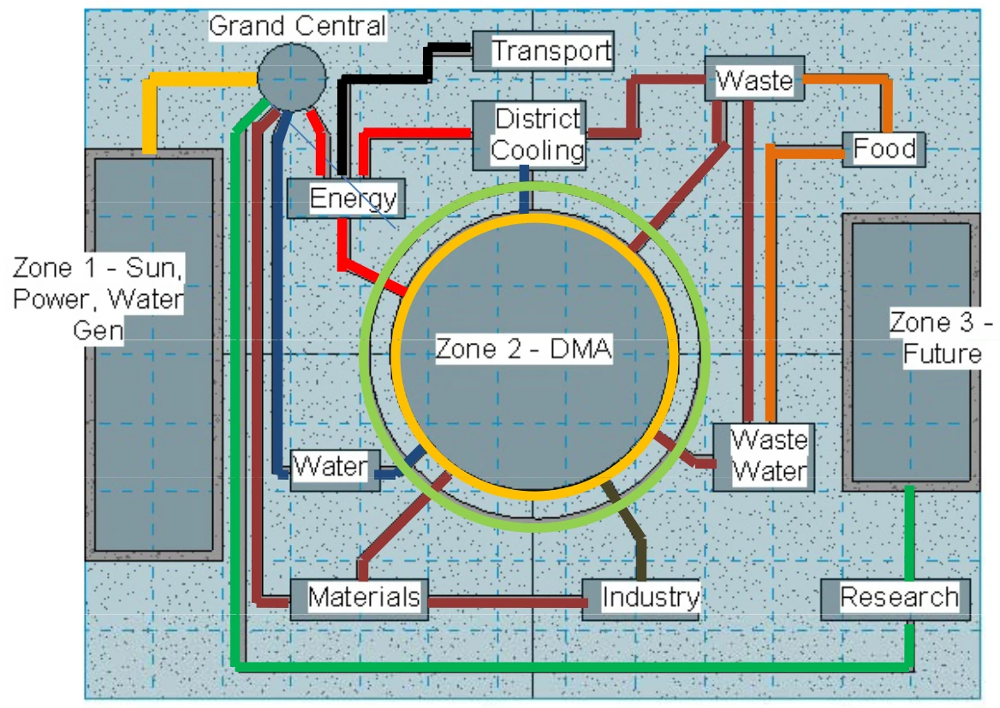
The flow diagram, from the exhibit story of 20 December 2012.The stand as built · World Future Energy Summit, 2013
5 · The drawings
Drawn, then drawn again for the builder.
The approved 3D, then the fabrication plan the contractor built from.
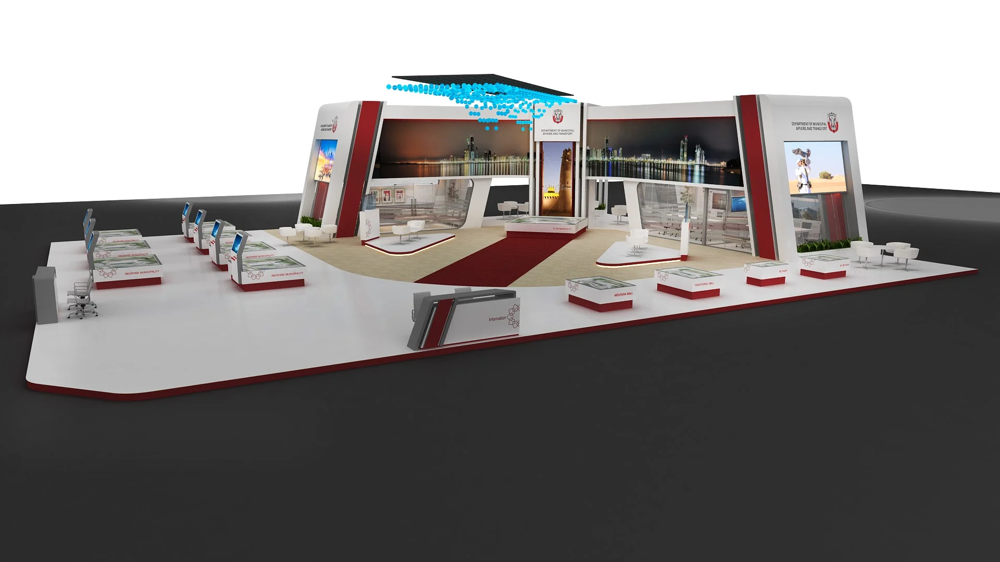
The approved design, Cityscape 2017 · 28 March 2017.
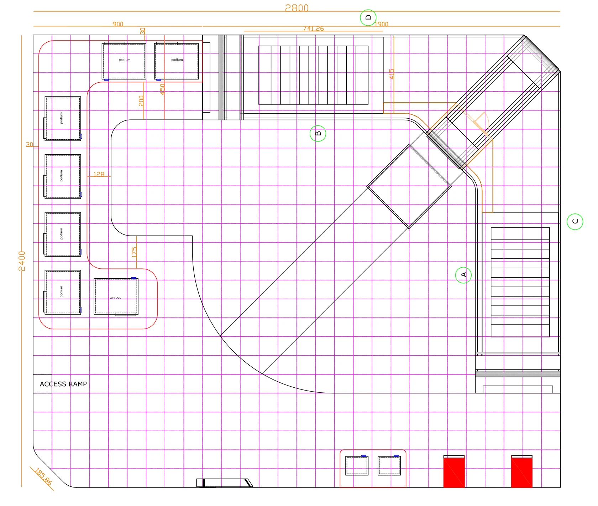
The fabrication plan, by Divine Creations, the stand builder.
6 · The build
Three days in the hall.
Cityscape 2017: 7,200 sq ft, fourteen projects, built in three days. Tawdheef 2017, the recruitment fair: the same client’s stand, glass going in on 28 January, finished the next night.
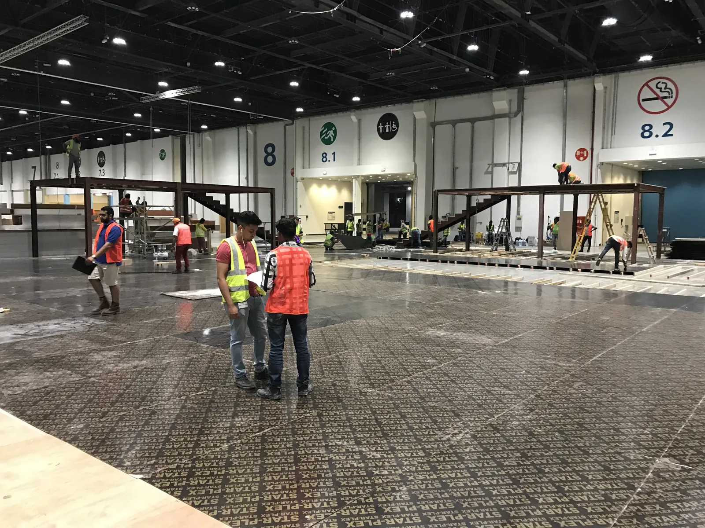
14 April, 8:33 pm · day one, the floor goes down.
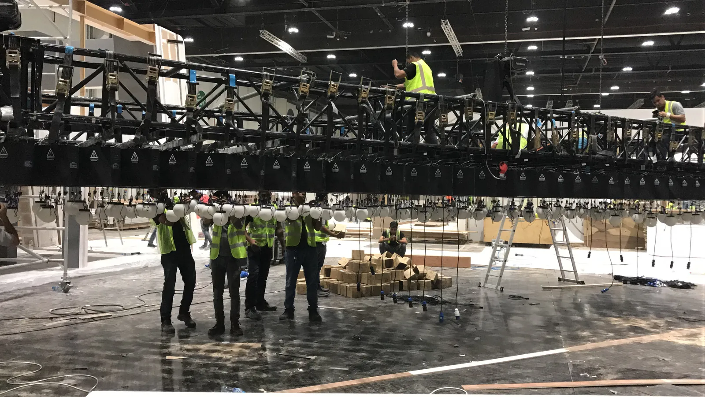
15 April · the truss and its spheres, before the lift.
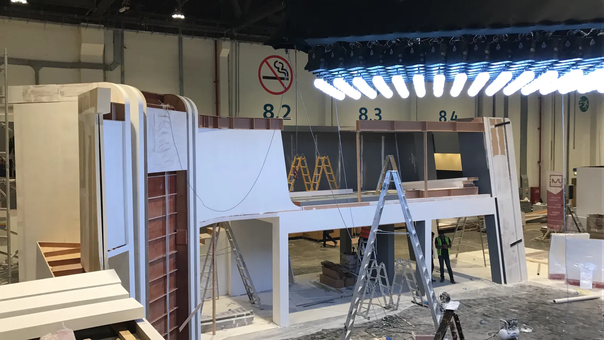
15 April · the spheres lit, the wings half built.Almost finished, before the doors opened on 18 April.
Tawdheef 2017
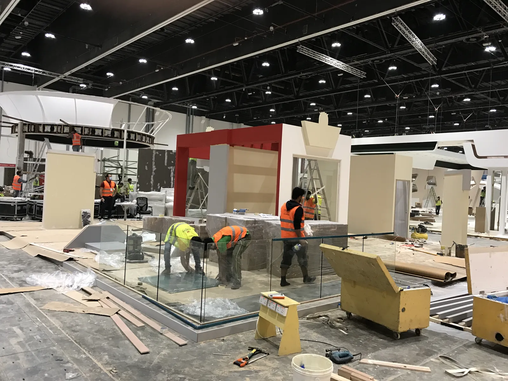
28 January 2017, 5:24 pm.
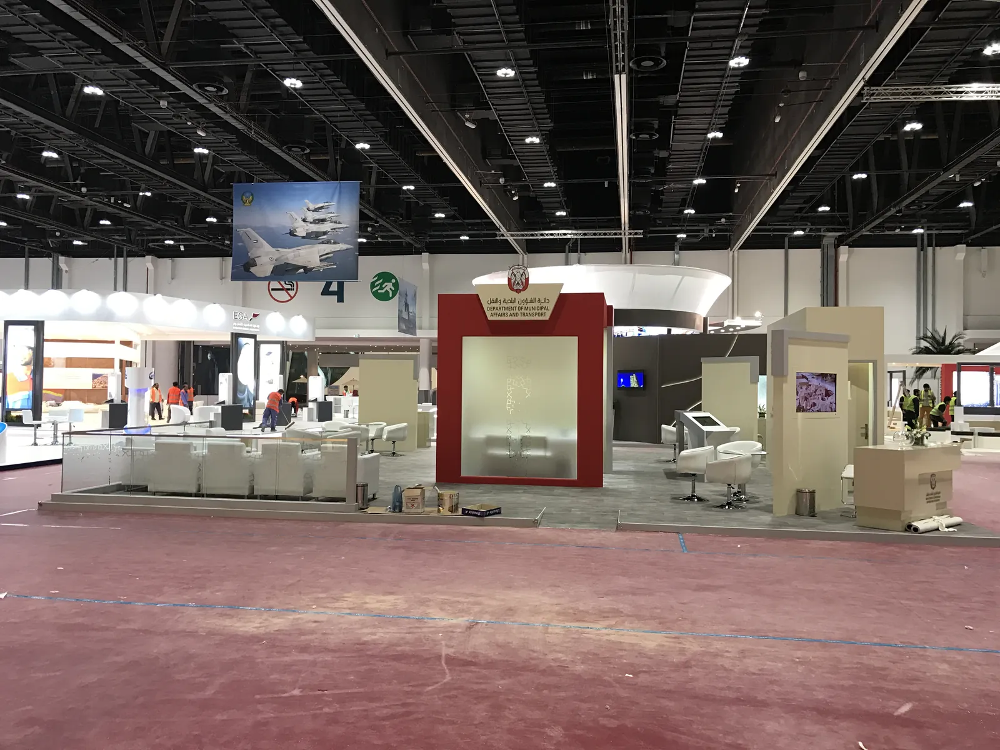
29 January 2017, 9:45 pm · built.
7 · The opening
Then the doors open.
Cityscape Abu Dhabi, opening day 2017. Innovation Month, Al Ain: from an empty forecourt to a gate in nine weeks.
The 3D, with its measures: one stand, 10 by 10 ft (3 by 3 m)8 December 2018 · the stands going up, from the build film
The hall
Five built, in the order they stood.
2013 World Future Energy Summit
2017 Tawdheef
2017 Cityscape Abu Dhabi
2018 Department of Transport, Abu Dhabi
2018 Shurooq
In 3D
The hall, rebuilt.
Sixteen stands, rebuilt from their own floor plans. Scroll: the five built ones rise, in the order they stood. Then tap for the other eleven.
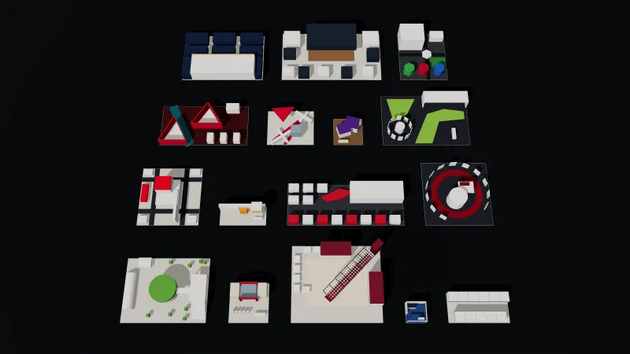
The hall from above, the sixteen stands raised
2013World Future Energy Summit · Built · from the plan of its bill of quantities · the photograph
2017Tawdheef · Built · from its photographs, at the size on its invoice · the photograph
2017Cityscape Abu Dhabi · Built · from the builder’s fabrication plan · the photograph
2018Department of Transport, Abu Dhabi · Built · from its photographs, at the size on its quotation · the photograph
2018Shurooq · Built · from the measured 3D drawn for the builder · the photograph
2012ABB at ADIPEC · Design · from its plan
2012Ducab at Middle East Electricity · Design · from its dimensioned elevation
2012Dubai pavilion, Dubai World Trade Centre · Design · from its layout
2012ACTVET at Najah · Design · from its plan
2011–13Abu Dhabi Education Council · Design · from its plan
2011–13ADCOM Systems · Design · from its plan
2011–13Elm · Design · from its plan
2011–13Etisalat at GITEX Shopper · Design · from its circulation plan
2011–13Safia Trading at IDEX · Design · from its plan
2013Al Gaith at ADIPEC · Design · from its plan
2022Al Hamra at ISNR · Proposal · from its floor plan and elevation
The original work, brought to life: a new 3D presentation built from the original plans and photographs.
The scope
What we delivered.
For the Department’s stands, the whole job: the stand, the screens and their content, the campaign, the invitations, the gifts, the event on site, the coverage.
Space
Cityscape 2017: 7,200 sq ft (672 m²), built in three days
Cityscape 2015: the same footprint, redesigned in 2016
World Future Energy Summit 2013: 5,600 sq ft (520 m²), a mezzanine and a tunnel
World Future Energy Summit 2015: 3,100 sq ft (286 m²)
Tawdheef 2015 and 2017: 1,550 sq ft (144 m²) each
Majlis, meeting rooms and VIP areas
Screens & content
Interactive presentations on touch screens, 18, in 2014 and 2015
Informative films and documentaries, 20, in 2014 and 2015
Touch-screen kiosks for job applications, five, Tawdheef 2017
LED walls and screens, with IT support on site
Campaign & print
Main visuals and campaign artwork, 2013 to 2016
Wall graphics for the 2014 pavilion, five areas
Brochures, 4,000, and leaflets, 5,000, in 2015
E-invitations, three, in 2015
Gift items, 4,500, and recycled bags, 5,500
Event
Event management on site
Build-up, dismantling, transport and storage
Catering, flowers and chocolates
Film & coverage
Video coverage with an edited report, two shows in 2015
Show film, Cityscape 2017
Social film for the stand, Tawdheef 2017
Corporate documentary, Cityscape 2013
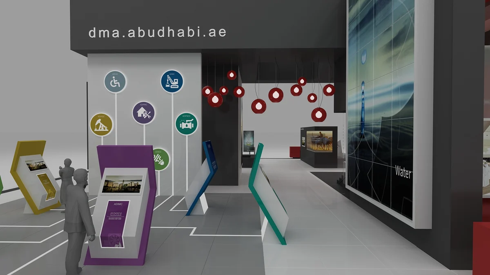
Cityscape 2015: the touch-screen kiosks, design render
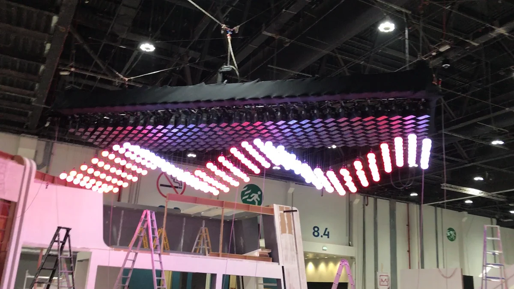
Cityscape 2017: the kinetic ceiling lit during the build
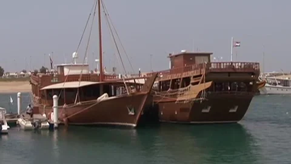
World Future Energy Summit 2014: a frame of the water film
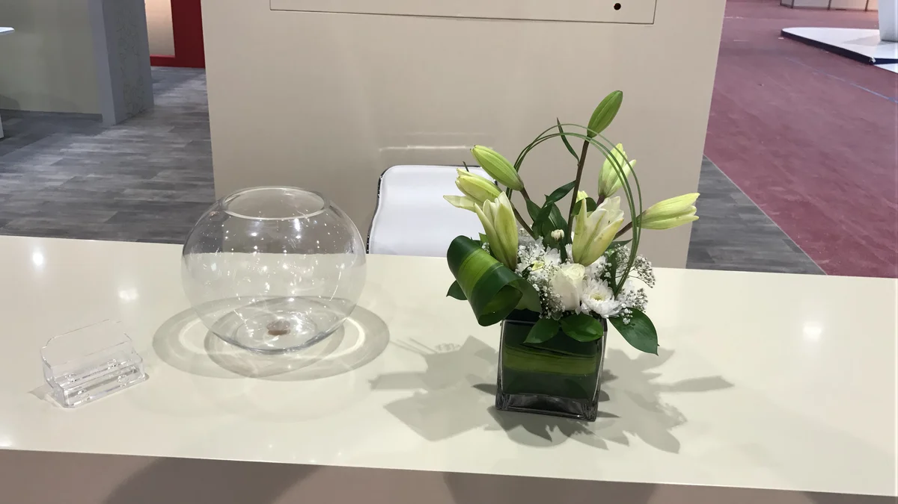
Tawdheef 2017: flowers on the reception counter, three days
From the delivery notes, the invoices, the 2017 agreement, the bill of quantities of the 2013 stand and the letters releasing the guarantees.
Proposed and not taken up: for Cityscape 2017, a campaign and 11 short project films; for Tawdheef 2016, a stand with five touch-screen panels.
The result
One department came back for twelve shows.
2011 to 2018: the World Future Energy Summit in 2011, 2013, 2014, 2015 and 2016; Cityscape Abu Dhabi in 2013, 2015, 2016, 2017 and 2018; Tawdheef in 2015 and 2017.
Built byCityscape 2017: Divine Creations, Dubai. Innovation Month: Halwan Advertising and Production. The 2012 and 2013 brand stands: Marcoms, Dubai. Shurooq 2018: Eleco. National Housing Exhibition 2018: Divine Creations.
The documentsBlock plan from the client’s brief, 20 March 2017. Hall plan from the Cityscape 2015 presentation. Flow diagram from the WFES 2013 exhibit story. Photographs taken on site. Show photographs of 2012 and 2013 from the AntBrush exhibition presentation of June 2013.